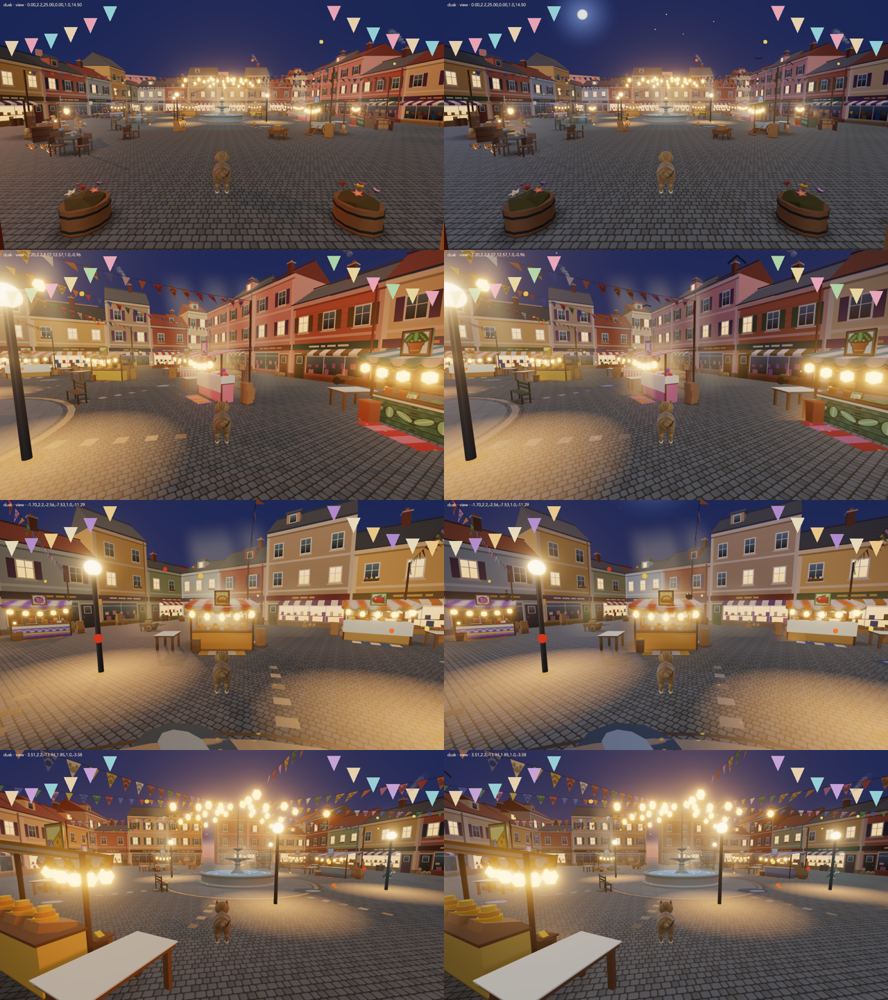

Left: the dusk walk as pass 7 drew it. Right: after dark (real clock 8 pm to 5 am, or ?night=1 on the page; here dusk=1&night=1). Rows: gate, flower stall, bakery lane, far end, at the game's chase camera, 1280x720 scaled. What is new: the sky goes deeper blue with a moon and twinkling stars; the light turns to moonlight with a silver rim on her fur; the awnings dim (closing hour); every lantern halo glows with a pool of light on the cobbles; a stallholder's lamp is left on at the bakery, flower and cheese stalls; moths circle the lanterns; an owl on the bakery roof turns its head, blinks and hoots; a cat sits on the toy stall's roof; bats flit over. Sound: crickets, a far music-box phrase, a low late-market murmur, the fountain louder, the owl's hoot. Honest notes: the dusk baseline was already dark and lantern-lit, so the lanterns and windows differ little; the visible changes are the moon and stars, the cooler tone, and (small, at this size) the moths, owl and roof cat. Whole frame triangles, meshes and casters are unchanged (nothing but pooled Points and light colours were added).
